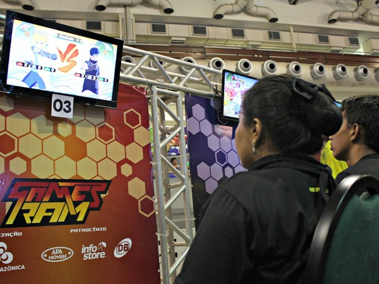
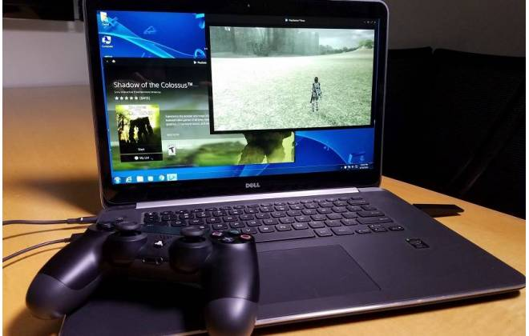
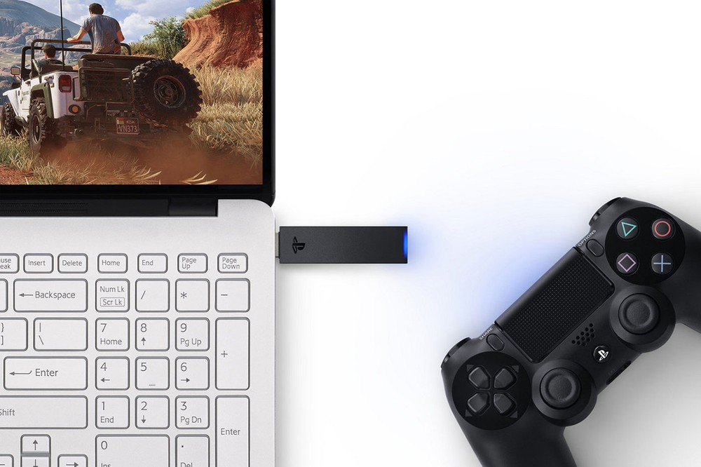

Segunda edição do Games RAM terá 'maratona' de 12 horas de competição
Postado em 02 de Abril 2016
A segunda edição do Games RAM deve reunir 600 gamers de Manaus durante uma maratona de 12 horas de competição, no dia 8 de abril, no Studio 5 Centro de Convenções. Participantes competirão em jogos como Fifa 17, Pro Evolution Soccer 17, Naruto Ultimate Ninja Storm 4 e com a novidade da edição, o jogo Just Dance, nas plataformas PS3, PS4 e X-BOX ONE. Segundo o analista de marketing da Rede Amazônica, José Ribamar Júnior, a organização do evento decidiu adicionar a competição de Just Dance no campeonato devido a uma grande procura pela competição do game na primeira edição do Games RAM, em 2016.
Postado por Esterlina genySony abre possibilidade para jogar games do PS4 no PC
Postado em 12 de Dezembro 2016
Pela primeira vez, a Sony fala em permitir que alguns de seus jogos exclusivos do PS4 possam ser jogados fora do PlayStation. Mais especificamente, a brecha será aberta por meio do PlayStation Now, que a partir de 2017 terá suporte a games do PS4, e que funciona no PC, mesmo que o usuário não tenha um console da marca. Para quem não se lembra, o PS Now é um serviço introduzido há alguns anos pela Sony que dá acesso a jogos via streaming. Ou seja: o game não roda fisicamente em um console na sua casa; seus comandos no controle são enviados aos servidores da Sony que processam e exibem o resultado na tela como se fosse um vídeo no YouTube. Para isso funcionar bem, é necessário ter uma conexão rápida e, principalmente, um ping baixo. Afinal de contas, se o seu comando demorar muito para chegar ao servidor e a resposta demorar a chegar até sua tela, seu jogo fica injogável. Isso explica o motivo de até hoje não termos o PS Now no Brasil, por causa da infraestrutura de rede pouco confiável do país. A mudança traz uma mudança de paradigma para a Sony e também para quem não é fã dos consoles da empresa. Afinal de contas, a mudança permitiria jogar um “Uncharted 4” ou “Horizon Zero Dawn” sem ter um PlayStation físico em sua sala. Isso permitiria alcançar até mesmo quem só tem um Xbox, ou quem tem um computador com configurações fracas, que não seria capaz de rodar games mais exigentes de uma forma satisfatória.
Postado por Esterlina genyGames de PS4 vão funcionar em computadores com serviço PlayStation Now
Postado em 12 de Dezembro 2016
Em breve será possível jogar games de PlayStation 4 no seu computador. A Sony anunciou nesta segunda-feira (13) que passará a incluir títulos do seu atual videogame no catálogo do PlayStation Now, serviço por assinatura de streaming de jogos. Ainda não há previsão de lançamento da novidade. Também não foram revelados quais serão os primeiros jogos de PS4 disponíveis para o serviço. De acordo com a Sony, o PS Now com games de PS4 começará a ser testado nas próximas semanas. Assinantes do serviço poderão receber convites para experimentar o novo recurso. O tal do Netflix dos games O PlayStation Now é um serviço à la Netflix que desde 2016 funciona tanto no PS4 quanto em computadores. A partir dele, os jogadores acessam e rodam pela internet um acervo de atualmente 483 games do PlayStation 3, como "God of War III", "The Last of Us" e a série "Uncharted".
Postado por Esterlina geny